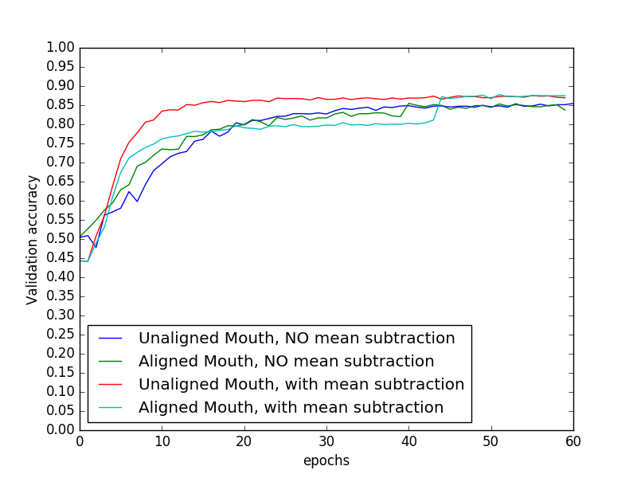

Accuracies in paper: LIPREADING WITH LONG SHORT-TERM MEMORY:
For model trained by me, comparison of change in training and validation accuracies with epoch:

In both speaker-dependent and speaker-independent cases, validation accuracy does not change much with/without face alignment.
Training on unaligned images gives best accuracies in all cases.
Mean subtraction gives better results for speaker-dependent tasks, but worse results for speaker-independent tasks
It is advisable to not align face, i.e. to not use pose information while training for lipreading
It is also advisable to not subtract mean image of training images, since using the same mean image on speaker-independent tasks leads to worse accuracies, although for speaker-dependent tasks, it leads to better accuracies.